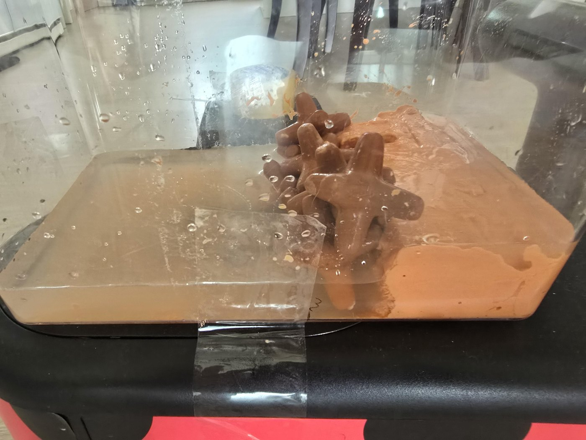

오늘은 어떤 바다를
탐험할까요?
사진으로 만나고, 손으로 바꾸고, 스스로 발견하는 파도 이야기.

1부 · 관찰에서 시작해요작은 수조에서
작은 수조에서
시작된 질문
모형과 위치를 바꾸면 파도를 막는 효과도 달라질까요? 실제 사진과 손끝 수조로 알아봐요.
1부 읽고 체험하기실제 실험 사진 · 수조 체험 · 관찰 기록파도 에너지
100%
100%
되돌아감통과함다른 형태로
2부 · 원리를 찾아가요파도 에너지의
파도 에너지의
행방을 찾아서
뒤쪽 파도가 작아지면 에너지는 어디로 갈까요? 빈틈을 바꾸고 세 갈래 에너지를 추적해요.
2부 읽고 체험하기에너지 배달소 · 회전 탐정 · 발견 퀴즈1부의 “어떻게 달라질까?”에서
2부의 “왜 그럴까?”로.
2부의 “왜 그럴까?”로.
처음이라면 1부부터, 원리가 궁금하다면 2부부터 시작해도 좋아요.
어려운 설명은 접어 두고, 중1도 이해할 수 있는 말로 풀었어요.